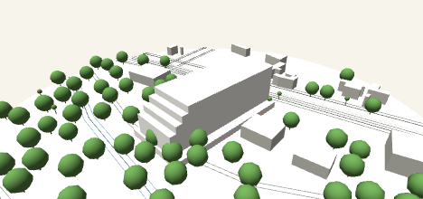

CotaCero consulta el catastro público al instante y te muestra qué puedes construir en tu lote — y te arma el plano que el municipio exige, listo para el trámite.

Cada producto nuevo que armamos se agrega acá apenas está listo — este catálogo crece con el sistema.
Tocas tu lote en el mapa y en segundos ves cuánto puedes construir: normativa real, retiros por lado, un modelo 3D y un informe PDF con ubicación y uso de suelo.
Equipamientos cercanos (educación, salud, seguridad, espacio público), transporte público, jerarquía vial y cobertura de agua, alcantarillado y electricidad — todo consultado en vivo contra las redes reales del municipio.
El plano que el municipio exige de verdad: construcciones, árboles, postes, vías con vereda y calzada, cotas — dibujado sobre el catastro real y exportado en DXF georeferenciado con lámina y membrete incluidos.
Cada vez que se arma una capacidad nueva — levantamiento topográfico, valor de mercado del predio — aparece acá como fila nueva.
El producto gratis ya está en vivo. Los productos pagos están en acceso anticipado — déjanos tu mail, te escribimos con los datos de transferencia y coordinamos el resto por ahí.